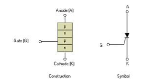

What is thyristor?
Thyristor is a power electronic device which has four layers (P N P N) with three junctions. It can conduct in only direction but can block the voltage in both direction.

What are different operating modes of a thyristor?
Ans. A thyristor can operate in three different modes. These are
1) Forward blocking mode : In this mode thyristor is in OFF state and anode voltage is greater than cathode voltage.
2) Reverse blocking mode : Here thyristor does not conduct and cathode volume is greater than anode voltage.
3) Forward conducting mode : In this case thyristor anode voltage is greater than cathode voltage and thyristor conducts the current.
Discuss about the biasing of different junctions during different operating modes.
Ans. A thyristor can operate in three different modes such as forward blocking mode, reverse blocking mode and forward conducting mode.
1) Forward blocking mode : J1 and J3 are forward biased, J2is in reverse bias.
2) Reverse blocking mode : J1 and J3 are reversed biased, J2 is in forward bias.
3) Forward conducting mode : All the three junctions J1, J2 and J3 are in forward bias condition.
What is holding current?
Ans. This is the current level below which anode current must fall for proper time off of a thyristor for proper turn off of a thyristor. So holding current is related to turn off process of thyristor.
What is latching current?
Ans. This is the minimum current level above which anode current must reach for proper fixing or turning on of a thyristor. So latching current is related to turn on process of thyristor.
Why a thyristor is not triggered when it is in reverse blocking state?
Ans. A p-n junction will have larger breakdown voltage when its layers are lightly doped. But junction with heavily doped layer will have low breakdown voltage. J1 will have large break down voltage as N1 is lightly doped but J3 have low breakdown voltage as N2 is highly doped. So, reverse biased mode maximum voltage is blocked by J1. Now if gate signal is applied when thyristor is in reverse blocking mode then J3 becomes forward biased. Hence all reverse voltage is blocked by J1 alone. Now as J2 is forward biased so N1 will be flooded with positive charges from gate. This will increase the leakage current through I1. So large leakage current associated with high reverse voltage generates huge amount of heat and junction temperature rises beyond allowable limit. This may destroy the device. For this reason thyristors are never triggered in reverse blocking mode.
What is the most suitable method to trigger a thyristor and why?
Ans. Among different types of triggering, gate triggering is the most suitable, efficient and reliable method technique to trigger a thyristor. Gate triggering can be controlled effectively and can be done at very low forward voltage. So it is the most common practice to use gate triggering. By using this technique we can also avoid unwanted triggering.
What is LASCR ? Where is it used?
Ans. LASCR stands for Light Activated Silicon Controlled Rectifier. This device is triggered with the help of radiation. Here gate signal is controlled by varying the intensity of radiation. In place of gate terminal there is a recess where the radiation is focussed for triggering. LASCR is used in HVDC (high voltage direct current) transmission system.
Why LASCR is used in HVDC transmission system?
Ans. HVDC (High Voltage Direct Current) transmission system operates at a very high voltage level. But gate circuit of a thyristor is a low power circuit. So there is a big problem to electrically isolate the high power thyristor circuit from their low power gate circuit. In this case LASCR (Light Activated Silicon Controlled Rectifier) is used. The main reason behind using LASCR is that it can be triggered by radiation. So there is no question of electrical isolation.
How local hot spots are formed in a thyristor?
Ans. When a thyristor is triggered then anode current begins to spread across it. If rate of rise of anode current (di / dt) is greater than the rate of spread of charges then localized heat generation takes place. This is known as local hot spots.
What is snubber circuit ? Why is it used in a thyristor circuit?
Ans. A capacitor in series with a resistor is known as snubber circuit. There may be a diode present across the resistor to improve its performance. It mainly serves two purposes in thyristor circuit. It limits high dv / dt snubber circuit across a thyristor as well as equalize the voltage drops across each thyristor in a series connected thyristor string.
What is voltage clamping device?
Ans. It is a non linear resistor used in parallel with a thyristor. It provides a low impedance path during over-voltages. Thus protects a thyristor by short circuiting it. In normal operating conditions it offers high impedance and acts as if it is not present in the circuit. Metal oxide varistor is an example of voltage clamping device.
What is crowbar protection?
Ans. An SCR can withstand large current flow through it. We take advantage of this phenomenon and use it in crowbar protection system. This system is used to protect a converter from overcurrent. Crowbar protection sense the fault current with the help of current sensing resistor. If the fault current is very high then the SCR is triggered and the fault current bypass through it. Thus crowbar protection gives a quick isolation of the converter from fault.
What should be the characteristics of the material used in Heat Sink?
Ans. We use such types of materials whose thermal conductivity is very high. The material should also withstand high temperature. These characteristics ensure efficient and high rate of cooling.
Two thyristors can block 5 KV. Can they block 10 KV when they are in series?
Ans. Generally V-I characteristic of two thyristors differs from each other. So, when two thyristors connected in series they will not share equal voltages. Here each thyristor can block 5 KV individually. So if we apply 10 KV across the string they will not share 5 KV each due to the difference in their VI characteristic. So we have to apply less than 10 KV for safe operation.
How can we ensure the equal voltage division across the thyristors in a series string?
Ans. We can use static equalizing circuit which is nothing but a simple resistor. This is used in parallel with each thyristor. In case of transient condition or switching condition we have to use dynamic equalizing circuit. This is nothing but Snubber circuit which is a simple RC series circuit. This is also used in parallel with thyristor.
During which interval of switching of thyristor, maximum power loss takes place and why?
Ans. During turn on, between the interval of rise time maximum power loss takes place.
In this interval of time maximum voltage and current appears simultaneously As power = voltage × current, so maximum power loss occurring in this interval.
 by
by